Ovinocultura

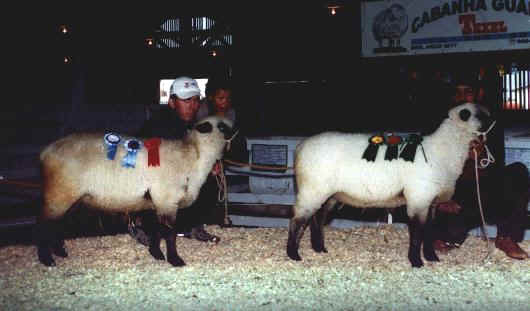
Animais premiados na XVI EXPOGUÁ
A criação de ovinos
no Colégio teve início em 1989 com 5 ovelhas de raças variadas,
algumas doadas, outras recebidas como pagamento de mensalidades.
O primeiro abrigo foi
uma das baias do estábulo que antes era destinada aos terneiros.
Com o aumento do rebanho no ano seguinte houve a necessidade de se construir um aprisco
próximo ao estábulo.
O primeiro aprisco tinha capacidade para 20 ovelhas e uma
baia separada para o reprodutor,
no ano seguinte com as novas crias, fez-se uma
ampliação.
O primeiro reprodutor da raça Hampshire Down veio por empréstimo do Colégio de Palmeira em 1992.
em 1993 um cordeiro do Colégio conseguiu bater grandes criadores
e obter a 1ª colocação no concurso de rendimento de carcaças promovido pela Ovinopar.
Com sucessivas trocas e aquisições de reprodutores de linhagem pura, foi-se afirmando a raça,
Em 1994, com o objetivo de venda de reprodutores, foi feita pela OVINOPAR,
a
primeira classificação do rebanho.
Em 1997 obteve-se os primeiros cordeiros classificados como S.O.
No ano de 1995 com grande aumento do rebanho o novo aprisco foi construído
com capacidade para abrigar 100 animais, entre matrizes,
reprodutores, cordeiros e borregos.
O rebanho atual conta com 97 animais S.O. (puros) e participa das exposições anuais em Guarapuava.
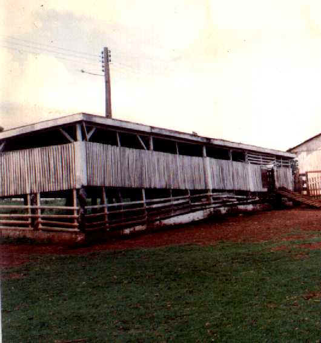
Aprisco em 1993
Em 1993 o Colégio obteve o 1º Lugar no concurso de Rendimento de Carcaças promovido pela OVINOPAR,
(clique na foto para ler a notícia do dia)
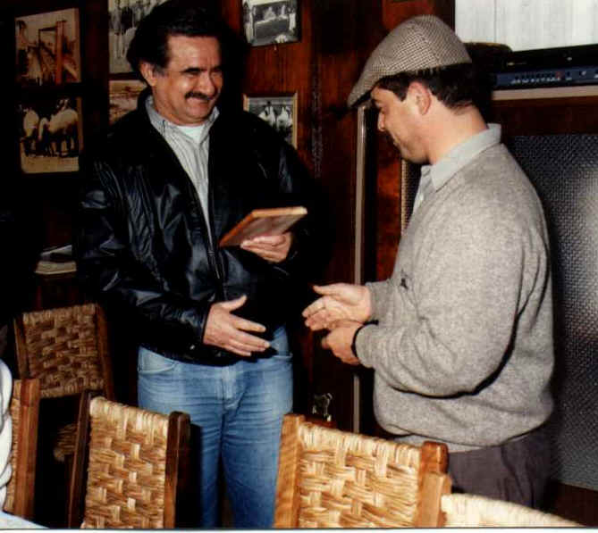
Professor Alexandrino recebendo o prêmio ( Setembro de 1993)
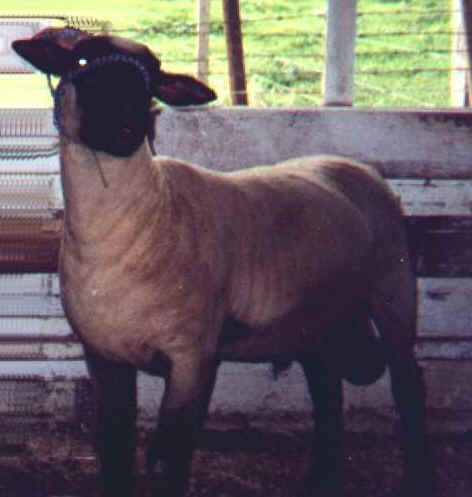
Reprodutor da raça Hampshire Down
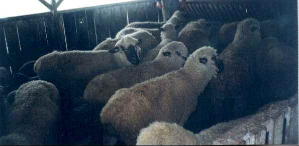
Borregas 1996
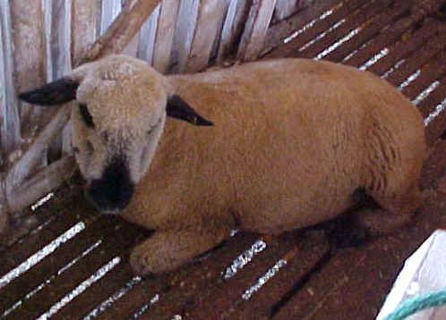 |
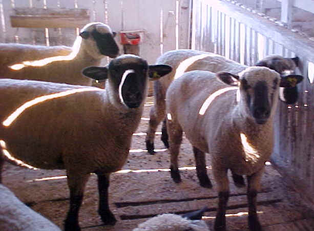 |
Borrega - 2003 |
Matrizes - 2003 |
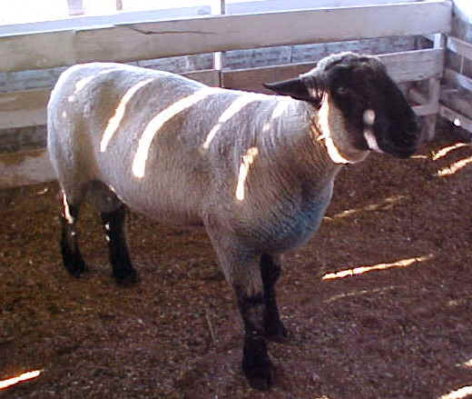 |
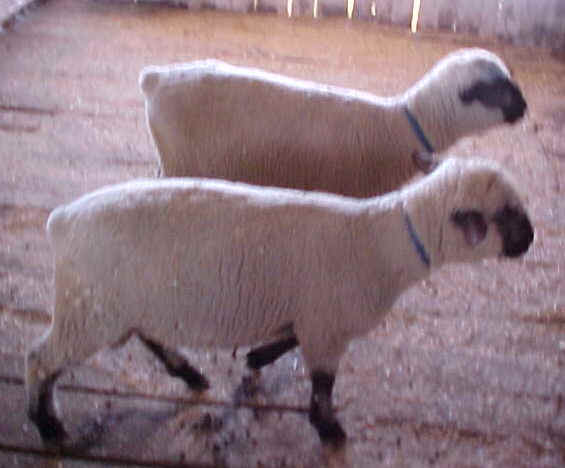 |
Reprodutor - 2003 |
Cordeiros - 2003 |
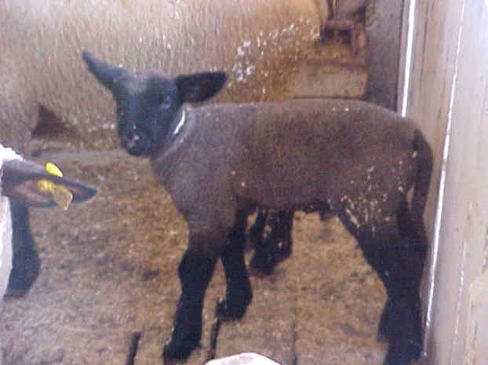 |
|
Com um bom manejo o Colégio obtém taxa de natalidade superior a 100% das matrizes (Com um bom índice de partos duplos) |
|
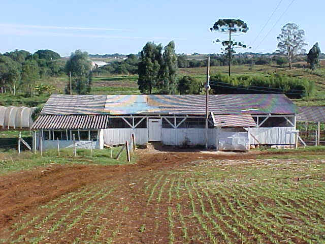
Aprisco (2003)